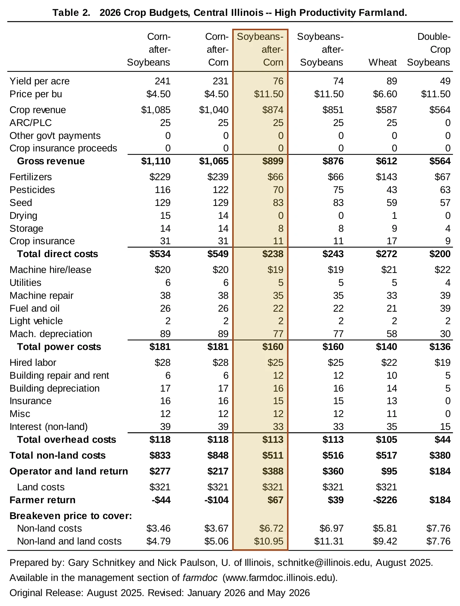

How Labor or Technology Intensive Are Soybeans? – Part C
Short answer: soybeans are a technology-intensive crop, not a labor-intensive one.
Almost every step is done by machine, most of the seed is genetically engineered, and weeds are controlled with herbicides. In the Illinois budget below, hired labor is only about 3% of total costs, while land, machinery, seed, and chemicals make up nearly all the rest. The seven questions below walk through how I got there.
1. Is there a Penn State Extension guide for soybeans?
Provide a link to the extension document and summarize, in general terms, the growing methods for your crop.
Yes. Soybeans are covered in the Penn State Extension soybean production pages and in the 2025 Penn State Agronomy Guide (PDF), which has its own soybean chapter and a soybean pest-management section. Penn State updates the guide every two years. The 2025 guide covers choosing varieties, soil fertility, planting, harvesting and storing grain, farm budgeting, and managing weeds, insects, and diseases for corn, soybeans, small grains, and forages (Penn State News). Penn State also tests soybean varieties across Pennsylvania every year (2025 Soybean Variety Testing Report).
How soybeans are grown, step by step
| Step | What happens |
|---|---|
| 1. Choose a variety | Farmers pick a variety that fits their area's season length, and nearly all choose herbicide-tolerant (GMO) seed (question 6). Penn State's variety trials help Pennsylvania farmers compare yields. |
| 2. Plant | Seeds are planted with a planter or drill in late spring, often in narrow rows. For soybeans planted late, after a wheat harvest ("double-crop" soybeans), Penn State recommends rows under 15 inches (ideally about 7 inches) and a final stand of at least 180,000 plants per acre, 200,000 if planted before July 5 and 220,000 after (Penn State Extension – Double Crop Soybeans). |
| 3. Fertilize (lightly) | Soybeans are legumes. Bacteria in their roots take nitrogen from the air, so soybeans need much less fertilizer than corn (question 4). |
| 4. Control weeds and pests | Weeds are the biggest problem. Penn State says herbicides are the foundation of weed control in most Pennsylvania soybean fields, especially no-till ones (Penn State Extension – IPM Program for Soybean). Farmers often spray before planting (a "burndown," see question 5) and again during the season. Insects and diseases are watched and sprayed when needed. Organic growers fight weeds with cultivation and cover crops instead. Penn State found that organic no-till soybeans in 15-inch rows yielded more but had more weeds than 30-inch rows that were cultivated (Penn State Extension – Organic No-till Soybeans). |
| 5. Harvest | In the fall, when the pods are dry, a combine cuts the plants and separates the beans in one pass. There is no hand picking. |
| 6. Store and sell | Beans go to on-farm bins or a grain elevator, then to crushing plants or export terminals (Part B). |
My takeaway: the Penn State materials are mostly about decisions (which variety, when to plant, how many seeds, which herbicide), not about hand work. That already hints that soybeans are a technology crop.
2. Enterprise budget from a top state: Illinois
Provide a link, a visual graphic, and a general description of the budget, including the estimated per-acre costs.
In Part B, Illinois was the #1 soybean state ($7.0 billion in 2024). So I used the Illinois crop budgets from farmdoc, the farm-management program of the University of Illinois's Department of Agricultural and Consumer Economics, prepared by Gary Schnitkey and Nick Paulson: farmdoc 2026 Crop Budgets (PDF). They were first released in August 2025 and updated in January and May 2026, so they cover the 2026 growing season. The numbers come from real farm records kept by Illinois Farm Business Farm Management (FBFM), a group of more than 4,900 farmers. I used Table 2: central Illinois, high-productivity farmland, soybeans grown after corn (the corn–soybean rotation).

Where the money goes: costs per acre of Illinois soybeans, 2026
| Line in the budget (per acre) | Amount |
|---|---|
| Yield × price | 76 bu × $11.50 |
| Gross revenue (crop $874 + $25 ARC/PLC payment) | $899 |
| Fertilizers | $66 |
| Pesticides | $70 |
| Seed | $83 |
| Drying ($0), storage ($8), crop insurance ($11) | $19 |
| A. Total direct costs | $238 |
| Machine hire/lease ($19), utilities ($5), repair ($35), fuel and oil ($22), light vehicle ($2), machinery depreciation ($77) | $160 |
| B. Total power costs | $160 |
| Hired labor | $25 |
| Building repair/rent ($12), building depreciation ($16), insurance ($15), misc. ($12), interest ($33) | $88 |
| C. Total overhead costs | $113 |
| Total 1: non-land costs (A + B + C) | $511 |
| Land cost (cash rent) | $321 |
| Total 2: all costs, including land ($511 + $321) | $832 |
| Farmer return (revenue − all costs) | $67 |
| Break-even price: non-land costs / all costs | $6.72 / $10.95 per bu |
Source: farmdoc 2026 Crop Budgets, Table 2. The A + B + C groupings are farmdoc's own. farmdoc does not print Total 2, so I added non-land costs and land costs together.
What the budget says, in my own words
The budget shows two totals, just as the assignment warned. Non-land costs are $511 per acre: everything a farmer pays to grow the crop, including machinery depreciation (the yearly wear-and-tear cost of tractors and combines). The grand total is $832 per acre once you add $321 for land rent. I use both totals in questions 3 and 4.
The biggest single cost is land, at 39% of the total, followed by machinery ($160) and seed ($83). At the budget's price of $11.50 per bushel, the farmer covers the non-land costs easily (break-even $6.72) and earns about $67 per acre after paying rent (break-even $10.95). That margin is thin, though. If the price fell by just 55 cents, to $10.95, crop sales would only just cover all costs, and $25 of the farmer's revenue is a government ARC/PLC payment. Corn in the same table is expected to lose $44 per acre, so in this budget soybeans are the more profitable crop.
Margins also swing a lot from year to year. In farmdoc's 2025 budget, the same farm was expected to lose $36 per acre because the soybean price was only $10.25 (farmdoc 2025 Crop Budgets, Table 2). Swings like that help explain why government payments matter so much to soybean farmers (Part D).
3. How labor intensive are soybeans?
Use the figures from the budget, calculate a labor intensity percentage (labor costs ÷ total production costs), and explain any assumptions.
My calculations
| Version | Labor cost | Divided by | Labor intensity |
|---|---|---|---|
| Main answer: hired labor only | $25 (budget line "Hired labor") | $832 all costs | 3.0% |
| Same, without land | $25 | $511 non-land costs | 4.9% |
| Upper bound: hired labor + machine hire/lease | $25 + $19 = $44 | $832 / $511 | 5.3% / 8.6% |
| Check with national USDA data (2024): hired labor $6.37 + value of the farmer's own unpaid labor $22.00 | $28.37 | $632.11 total cost per planted acre | 4.5% |
Sources: farmdoc 2026 Crop Budgets, Table 2; USDA-ERS Commodity Costs and Returns, U.S. soybeans 2024, as republished by the American Soybean Association's SoyStats.
Assumptions I made
- Harvest labor is not a separate "contract" cost here. Unlike tomatoes, soybeans are harvested by the farmer's own combine, so harvest labor is inside "hired labor" and machinery costs. Some farmers do hire custom operators, which would show up under "machine hire/lease." That is why I added an upper bound that counts all of machine hire/lease as labor, even though part of it is really equipment rental.
- The farmer's own time is not counted in the farmdoc budget. It is paid out of the "farmer return," which is negative here. USDA's national cost data does put a value on it ($22 per acre), and even with it, labor is only about 4.5% of costs.
Analysis
However you measure it, soybeans are not labor intensive: labor is somewhere between 3% and 9% of costs, compared with about 34% for fresh tomatoes in my professor's sample. The money goes to machines instead of people. In the Illinois budget, machinery costs ($160) are more than six times hired labor ($25). This helps explain how a small number of people can farm large areas of soybeans, and why soybeans do not depend on farmworkers the way fruit and vegetable crops do.


4. How chemical intensive are soybeans?
Use the budget figures to calculate a fertilizer/pesticide intensity percentage and analyze it.
| Chemical cost (per acre) | Amount | % of all costs ($832) | % of non-land costs ($511) |
|---|---|---|---|
| Fertilizers | $66 | 7.9% | 12.9% |
| Pesticides (herbicides, insecticides, fungicides) | $70 | 8.4% | 13.7% |
| Total chemicals | $136 | 16.3% | 26.6% |
Source: farmdoc 2026 Crop Budgets, Table 2; percentages are my own calculations.
Labor and chemical intensity: soybeans vs. corn (same Illinois budget)
Analysis
Chemicals are about 16% of all costs (27% of non-land costs), so soybeans are moderately chemical intensive. Two things stand out to me:
- Pesticides cost a bit more than fertilizer. Weeds are the main threat to soybean yields, so herbicides are the main pesticide. USDA found herbicides were sprayed on 96% of U.S. soybean acres in 2023 (USDA-NASS Chemical Use Survey).
- Soybeans use far fewer chemicals than corn. In the same budget, corn spends $345 per acre on chemicals, 30% of its costs, mostly fertilizer. Soybeans make their own nitrogen, so their fertilizer bill is less than a third of corn's. This is a big reason farmers rotate the two crops.
5. A dangerous chemical used on soybeans: paraquat
Is any chemical used in production extremely toxic or dangerous to society or the environment? Pick one of the most toxic and describe it in detail.
The farmdoc budget lists pesticides only as one dollar amount ($70 per acre), but Penn State Extension's soybean weed articles do name products. For killing weeds before planting, Penn State mentions glyphosate (Roundup) and Gramoxone, a brand of paraquat (Penn State Extension – Double-Crop Soybeans: Weed Management). Beyond Pesticides' Eating with a Conscience database counts 83 pesticides with EPA tolerances on soybeans, 38 of them acutely toxic, although not every one is used on every field (Beyond Pesticides, citing its database). Beyond Pesticides is an advocacy group, so I used government and university sources for the details below. I compared three common soybean herbicides and picked paraquat because it is by far the most acutely toxic.
| Herbicide | How it's used on soybeans | Main concern |
|---|---|---|
| Paraquat | "Burndown" spray that kills weeds before planting | Extremely poisonous; linked to Parkinson's disease (below) |
| Dicamba | Sprayed over dicamba-tolerant GMO soybeans | Drifts onto and damages nearby crops and trees; a federal court cancelled its over-the-top approval in 2024 (Ohio State), but EPA approved it again for 2026 and 2027 with stricter rules (South Dakota State Extension) |
| Glyphosate | Sprayed over Roundup Ready GMO soybeans | The WHO's cancer agency calls it "probably carcinogenic," but EPA says it is not likely to cause cancer at normal exposures (IARC; EPA) |
Why paraquat is so dangerous
"Paraquat is highly toxic to humans; one small accidental sip can be fatal and there is no antidote." (U.S. EPA, "Paraquat Dichloride: One Sip Can Kill")
- Deadly in small amounts. The CDC confirms that no proven antidote or cure exists for paraquat poisoning (CDC). Penn State Extension explains that pesticides are sorted by how much it takes to kill (the "LD50"), and the most toxic ones carry the signal words DANGER or POISON on the label (Penn State Extension – Toxicity of Pesticides).
- Strictly controlled. Every paraquat product in the U.S. is a Restricted Use Pesticide. Only trained, certified applicators may use it, and unlike most restricted pesticides, not even workers under their supervision are allowed to (EPA – Paraquat Dichloride).
- Used on soybeans before planting. An EPA report on paraquat in soybeans found that about 97% of soybean paraquat use happens in the spring before the crop comes up, and about 73% targets pigweed (Amaranthus) weeds (EPA, "Paraquat Dichloride Use in Soybeans").
- Linked to Parkinson's disease. A National Institutes of Health study of farmers found that people who used paraquat had about 2.5 times the odds of developing Parkinson's disease (Tanner et al., 2011, Environmental Health Perspectives). EPA has said it has not found a clear link, but in January 2025 it withdrew its earlier decision on paraquat to take another look at the evidence (Civil Eats; Science). In January 2026, EPA's administrator said the agency would make manufacturers show that paraquat is safe in real-world use (E&E News).
- Banned in many other countries, and now in some states. The European Union has banned paraquat since 2007, and many other countries have too (Earthjustice, an environmental law group). In May 2026, Vermont became the first U.S. state to ban it (Stateline). In August 2026, California announced that every company selling paraquat there had cancelled its registration, which starts a phase-out (California Department of Pesticide Regulation).
My opinion: paraquat shows a hidden cost of the herbicide-heavy way soybeans are grown. Years of relying on glyphosate helped create weeds that glyphosate no longer kills, which is part of why farmers adopted dicamba-tolerant soybeans and other herbicides (USDA-ERS Amber Waves). Paraquat is one of the tools farmers use against those hard-to-kill weeds. The people most at risk are not consumers eating soy foods. They are the applicators and rural families who live and work near the fields. Paraquat is still legal across most of the U.S. even though many other countries have banned it, and states like Vermont and California are now acting before the federal government does.
6. Genetic engineering / GMO soybeans
Share of U.S. soybean acres planted with herbicide-tolerant (GMO) seed
(a) Are GMO soybeans produced and sold in the U.S. today?
Yes, almost all of them. In 2025, 96% of U.S. soybean acres were planted with herbicide-tolerant (genetically engineered) seed, the same record level as 2024 (USDA-ERS). Soybeans are on USDA's official List of Bioengineered Foods, along with crops like corn, canola, and sugar beets. Even back in 2015, Time reported that more than 90% of U.S. soybean, corn, and cotton acres were genetically engineered (Time, 2015).
One thing that surprised me: even though almost all soybeans are GMO, many soy foods do not carry a "bioengineered" label. USDA's rule says highly refined ingredients, like refined vegetable oils, often do not require the label if no modified genetic material can be detected (Federal Register, 2018). That is why the Silk soy milk I photographed in Part A advertised itself as "Non-GMO Project Verified": it is a selling point because most soy is GMO.
(b) Were GMO soybeans produced and sold in the past?
Yes. The first was Monsanto's Roundup Ready soybean, which tolerates glyphosate. USDA approved it in 1994, and farmers first planted it commercially in 1996. It was the first widely used GMO crop (Environment & Society Portal). Adoption was fast: from 7% of acres in 1996 to 68% by 2001 (chart above). Later came dicamba-tolerant soybeans, which spread quickly after 2017 (USDA-ERS Amber Waves).
(c) Are new GMO soybeans being developed?
Yes. One example is HB4 drought-tolerant soybeans, made by adding a gene from sunflowers. USDA approved the trait in 2019, and it is also approved in Argentina, Brazil, Paraguay, Canada, and China (ISAAA). A field study found it performed well in hot, dry conditions (Journal of Experimental Botany). Scientists are also using gene editing (CRISPR) to make soybeans more drought tolerant (peer-reviewed study). With climate change bringing more droughts, I think traits like this will matter more in the future.
7. Organic alternatives: market share and production
What percentage of all sales are organic, and what percentage of production acres are organic?
How organic soybeans compare (percent organic)
| Measure | Organic | All soybeans | Organic share |
|---|---|---|---|
| Sales (2021) | $242 million (USDA-NASS 2021 Organic Survey) | $59.1 billion value of production (USDA-ERS Oil Crops Yearbook, Table 2) | 0.41% |
| Acres (2019) | "Less than 1 percent of total harvested acres" (USDA-ERS) | < 1% | |
| Acres (2021/22 estimate) | about 252,000 acres (Mercaris, a private data firm, via AgWeb) | 86.3 million acres harvested in 2021 (USDA-ERS, Table 2) | about 0.3% |
| "Move up a category": all U.S. farm products (2021) | "Organic sales in 2021 accounted for about 3 percent" of U.S. farm sales (USDA-ERS Amber Waves) | ~3% | |
The Packer's Produce Market Guide covers fresh produce, not field crops like soybeans, so I used USDA sources instead, including the ERS report U.S. Organic Production, Markets, Consumers, and Policy, 2000–21. The 0.41% and 0.3% shares are my own calculations from the numbers shown.
Analysis
Organic soybeans are a tiny niche, under half of one percent of both soybean sales and soybean acres. That is far below organic's ~3% share of U.S. farm sales overall. The niche is growing, though: organic soybean sales more than doubled from $109 million in 2019 to $242 million in 2021 (USDA-NASS).
Why so small? Organic soybeans cost about $106–$125 more per acre to grow (USDA-ERS), partly because weeds must be controlled without synthetic herbicides. In return, buyers pay a big premium: organic feed-grade soybeans sold for about 98% more than regular soybeans (USDA-ERS ERR-315). U.S. farmers still don't grow enough organic soybeans, so the U.S. also imports them. In Part B, organic beans made up 59% of U.S. soybean import value in 2024. To me, this connects the whole report: soybeans are a technology crop, and organic farming means giving up the main technologies (GMO seed and herbicides) that make soybeans so cheap to grow.